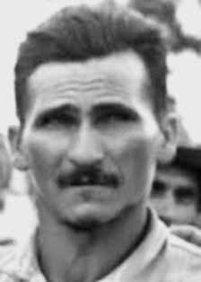

José
Porfírio
de Souza
CIRCUNSTÂNCIAS DA MORTE
A primeira onda repressiva na região de Trombas e Formoso, logo após o Golpe de 1964, resultou na prisão e tortura de camponeses e de líderes comunistas da região. A segunda invasão, em 1971, foi ainda mais violenta. Havia desconfiança de ligações entre os antigos posseiros de Trombas e Formoso com a Guerrilha do Araguaia. As forças repressivas também procuravam pelos líderes da revolta de Trombas e Formoso, dentre eles, José Porfírio de Souza. Em entrevista durante a audiência pública sobre o caso realizada em Goiânia em 15 de março de 2014, Dirce Machado da Silva, que juntamente com seu marido, José Ribeiro da Silva, e seu irmão, César Machado da Silva, foram presos e torturados por agentes da repressão para que revelassem o paradeiro de José Porfírio, afirmou que: Eles me bateram e disseram ‘se você não disser onde está o José Porfírio eu mato seu marido e seu irmão’. E me xingaram de vários nomes. Eu respondi: ‘não digo porque não sei. E se soubesse também não diria’. Daí eu quis morrer. Reuni todas as minhas forças e dei um tapa no soldado, que cambaleou. Então ele me deu um ‘telefone’ e eu desmaiei. Acordei toda molhada de cachaça e vômito.” (Dirce Machado da Silva em entrevista à Comissão Nacional da Verdade em 15 de março de 2014). As atividades de José Porfírio de Souza e de pessoas ligadas a ele foram ostensivamente monitoradas. Nesse sentido, os documentos registram antecedentes, julgamento, prisão soltura, busca de informações, trajetória e termos de declarações. A exemplo do abaixo mencionado, elaborado em 20 de julho de 1971, um ano antes da prisão do líder camponês, que destaca que forças militares efetuaram várias prisões com o objetivo de localizar José Porfírio: 6. GOIÁS No dia 14, foram detidos na detidos na região de Trombas e Formoso/GO, os indivíduos AMADEU LUIZ GUERREIRO e MANOEL DE SOUZA CASTRO, sendo o primeiro do PCB e o segundo ligado a organização extremista montada pelo Padre ALÍPIO DE FREITAS, tais detenções propiciaram o levantamento de dados importantes sobre atividades subversivas de extrema esquerda no interior de Goiás e que possivelmente possam conduzir ao ex-deputado e líder camponês José Porfírio de Souza. i Verifica-se, portanto, a preparação de uma operação para localização e captura do líder camponês, que findou, também, por se estender em desfavor de sua família: José Porfírio de Souza, ex-deputado pelo Estado de Goiás, líder camponês, responsável pelo movimento subversivo verificado nos municípios de Trombas e Formoso nos anos de 1961 e 1964, encontra-se foragido dos Organismos de Segurança em lugar incerto. (…) De posse do informe o Sr Maj PM Ch da PM/2 designou então fosse montada uma operação para levantar a veracidade do informe e se fosse o caso capturar José Porfírio (…) Dispostos nos lugares determinados, invadimos a porta da frente de arma em punho surpreendendo José Porfírio sentado em um banco que recebeu imediatamente voz de prisão, em seguida ordenamos que ele saísse o que foi cumprido, após amarrá-lo com as mãos para trás, trancamos sua esposa e filhos em um quarto depois de adverti-la de que a casa estava cercada por vários soldados e que se ela tentasse avisar alguém seria alvejada. Iniciamos nossa viagem de regresso levando preso conosco José Porfírio que a essa altura estava apenas de calção e descalço. (…) Às 3 horas da madrugada do dia seguinte estávamos entrando novamente no pequeno trecho da Transamazônica e às 6:30 horas entramos no Estado de Goiás passando pela ponte do estreito do Rio Tocantins, viajamos o dia todo e a noite, sendo que no dia 24 às 10 horas chegamos no Quartel General da Polícia Militar. José Porfírio Sousa foi entregue no mesmo dia ao Exmo Sr General Bandeira, em Brasília, recolhido em um Quartel da 3ª Brigada de Infantaria. Era o que tínhamos a relatar. QUARTEL DO COMANDO GERAL EM GOIÂNIA, 2/3/1972 GILBERTO PEREIRA RODRIGUES – 2 o TEN PM ii Especificamente, acerca da prisão de Porfírio, tem-se como relato que: JOSÉ PORFÍRIO DE SOUZA, casado e com direitos políticos suspensos, líder guerrilheiro na região TROMBAS-FORMOSO foi preso e está sendo encaminhado hoje para a 3ª Brigada em Brasília, escoltado por agentes do DPF/SDR/GO. Sua prisão ocorreu no dia 22 fev 72, às 20 horas, na fazenda Angical, município de Riachão, sul do Maranhão, e foi efetuada pelo Tenente Gilberto, soldado Jodealcos e motorista Joaquim, todos da PMEGO. JOSÉ PORFÍRIO DE SOUZA foi preso em operação surpresa, não tendo tido oportunidade de reação. iii Acusado de ser um dos organizadores do PRT, Porfírio foi condenado a seis meses de prisão e solto em 7 de junho de 1973. Documento do Serviço Nacional de Informações (SNI) localizado pela Comissão Nacional da Verdade (CNV), denominado “Documento de Informações no . 828/19”, datado de 15 de junho de 1973, apresenta o nome de José Porfírio de Souza com liberação expedida com data de 8 de junho 1973 e comprova o monitoramento de José Porfírio pouco antes de seu desaparecimento. Outro documento do SNI difunde a informação sobre a soltura de Porfírio aos órgãos repressivos: “Em 08 de Junho, mediante alvará de soltura, foi posto em liberdade JOSÉ PORFÍRIO DE SOUZA que se encontrava preso no PIC/BPEB. O referido elemento fora condenado a 6 meses de prisão em 27 Fev 73, em face do IPM da AP/PRT, instaurado em 1971.” Sobre o desaparecimento de José Porfírio, logo após a sua soltura, o livro Direito à Memória e à Verdade trazia a versão segundo a qual: solto no dia 07/07/1973, foi almoçar com sua advogada, “Elizabeth Diniz, que depois o levou até a rodoviária de Brasília para embarcar no ônibus para Goiânia. José já tinha a passagem comprada. Depois desse encontro, nunca mais foi visto. iv O depoimento de Dirce Machado da Silva, em 15 de março de 2014, à CNV complementa a versão do livro e destaca que Porfírio foi solto em 7 de junho de 1973, em Brasília (DF), de onde, após o almoço, despediu-se de sua advogada, Elizabeth Diniz, e tomou um ônibus na rodoviária com destino a Goiânia (GO). Já embarcado, o depoimento acrescentou a informação de que Porfírio, de fato, chegou a Goiânia, ficando hospedado na casa de seu companheiro do PCB, José Sobrinho, no setor Marista. Lá ele pernoitou e saiu pela manhã para uma agência bancária, para resolver problemas na sua conta, que estava bloqueada. E nunca mais foi visto. Esta versão também é apresentada no livro Dossiê Ditadura: mortos e desaparecidos políticos no Brasil (1964-1985) e foi corroborada em outros depoimentos colhidos pela CNV durante a audiência pública sobre a Luta Camponesa de Trombas e Formoso, em Goiânia (GO).
The first repressive wave in the Trombas and Formoso region, shortly after the 1964 Coup, resulted in the arrest and torture of peasants and communist leaders in the region. The second invasion, in 1971, was even more violent. There was suspicion of links between the former squatters of Trombas and Formoso with the Araguaia Guerrilla. The repressive forces were also looking for the leaders of the Trombas and Formoso revolt, among them, José Porfírio de Souza. In an interview during the public hearing on the case held in Goiânia on March 15, 2014, Dirce Machado da Silva, who together with her husband, José Ribeiro da Silva, and her brother, César Machado da Silva, were arrested and tortured by repression agents to reveal the whereabouts of José Porfírio, stated that: They beat me and said 'if you don't tell me where José Porfírio is I will kill your husband and your brother'. And they called me many names. I replied: ‘I’m not saying it because I don’t know. And if I knew, I wouldn’t say it either’. Then I wanted to die. I gathered all my strength and slapped the soldier, who staggered. Then he gave me a 'phone' and I passed out. I woke up all wet with cachaça and vomit.” (Dirce Machado da Silva in an interview with the National Truth Commission on March 15, 2014). The activities of José Porfírio de Souza and people linked to him were ostensibly monitored. In this sense, the documents record antecedents, trial, prison release, search for information, trajectory and terms of statements. For example, as mentioned below, prepared on July 20, 1971, a year before the arrest of the peasant leader, which highlights that military forces carried out several arrests with the aim of locating José Porfírio: 6. GOIÁS On the 14th, the individuals AMADEU LUIZ GUERREIRO and MANOEL DE SOUZA CASTRO were arrested in the region of Trombas and Formoso/GO, the first being from the PCB and the second linked to the organization extremist group set up by Father ALÍPIO DE FREITAS, such arrests led to the collection of important data on far-left subversive activities in the interior of Goiás and which could possibly lead to the former deputy and peasant leader José Porfírio de Souza. i Therefore, an operation was being prepared to locate and capture the peasant leader, which also ended up being to the detriment of his family: José Porfírio de Souza, former deputy for the State of Goiás, peasant leader, responsible for the subversive movement seen in the municipalities of Trombas and Formoso in the years 1961 and 1964, is on the run from the Security Organizations in an uncertain place. (…) With the report in hand, Mr Maj PM Ch of PM/2 then designated an operation to be mounted to verify the veracity of the report and if necessary capture José Porfírio (…) Arranged in the designated places, we invaded the front door with gun in hand, surprising José Porfírio sitting on a bench who immediately received an arrest warrant, then we ordered him to leave which was done, after tying him with his hands behind him, we locked his wife and children in a room after warning her that the house was surrounded by several soldiers and that if she tried to warn anyone she would be shot. We began our return journey taking José Porfírio with us, who at that point was only wearing shorts and barefoot. (…) At 3 am the following day we were re-entering the small section of the Transamazônica and at 6:30 am we entered the State of Goiás, passing through the Tocantins River Strait bridge, we traveled all day and night, and on the 24th at 10 am we arrived at the Military Police Headquarters. José Porfírio Sousa was handed over on the same day to the Honorable General Bandeira, in Brasília, held in a barracks of the 3rd Infantry Brigade. That's what we had to report. GENERAL COMMAND HQ IN GOIÂNIA, 3/2/1972 GILBERTO PEREIRA RODRIGUES – 2nd Lt. PM ii Specifically, regarding Porfírio’s arrest, it is reported that: JOSÉ PORFÍRIO DE SOUZA, married and with suspended political rights, guerrilla leader in the TROMBAS-FORMOSO region was arrested and is being sent today to the 3rd Brigade in Brasília, escorted by agents from the DPF/SDR/GO. His arrest took place on February 22, 72, at 8 pm, on the Angical farm, in the municipality of Riachão, south of Maranhão, and was carried out by Lieutenant Gilberto, soldier Jodealcos and driver Joaquim, all from PMEGO. JOSÉ PORFÍRIO DE SOUZA was arrested in a surprise operation, having no opportunity to react. iii Accused of being one of the organizers of the PRT, Porfírio was sentenced to six months in prison and released on June 7, 1973. Document from the National Information Service (SNI) located by the National Truth Commission (CNV), called “Information Document no. 828/19”, dated June 15, 1973, presents the name of José Porfírio de Souza with release issued on June 8 1973 and proves the monitoring of José Porfírio shortly before his disappearance. Another SNI document disseminates information about Porfírio's release to the repressive bodies: "On June 8, through a release permit, JOSÉ PORFÍRIO DE SOUZA was released, who was imprisoned in the PIC/BPEB. The aforementioned element had been sentenced to 6 months in prison on Feb 27, 73, in light of the AP/PRT IPM, established in 1971." Regarding the disappearance of José Porfírio, shortly after his release, the book Direito à Memória e à Verdade contained the version according to which: released on 07/07/1973, he went to lunch with his lawyer, “Elizabeth Diniz, who then took him to the Brasília bus station to board the bus to Goiânia. José had already purchased his ticket. After that meeting, he was never seen again. iv The testimony of Dirce Machado da Silva, in March 15, 2014, CNV complements the version of the book and highlights that Porfírio was released on June 7, 1973, in Brasília (DF), where, after lunch, he said goodbye to his lawyer, Elizabeth Diniz, and took a bus at the bus station bound for Goiânia (GO). Once on board, the statement added the information that Porfírio, in fact, arrived in Goiânia, staying at the house of his partner. PCB, José Sobrinho, in the Marista sector. There he spent the night and left in the morning for a bank branch, to resolve problems with his account, which was blocked. This version is also presented in the book Dossiê Ditadura: political dead and disappeared in Brazil (1964-1985) and was corroborated in other statements collected by the CNV during the public hearing on the Trombas and Formoso Peasant Struggle, in Goiânia (GO).
La primera ola represiva en la región de Trombas y Formoso, poco después del golpe de 1964, resultó en el arresto y tortura de campesinos y líderes comunistas de la región. La segunda invasión, en 1971, fue aún más violenta. Había sospechas de vínculos entre los antiguos ocupantes ilegales de Trombas y Formoso con la Guerrilla de Araguaia. Las fuerzas represivas también buscaban a los líderes de la revuelta de Trombas y Formoso, entre ellos, José Porfírio de Souza. En entrevista durante la audiencia pública sobre el caso celebrada en Goiânia el 15 de marzo de 2014, Dirce Machado da Silva, quien junto con su marido, José Ribeiro da Silva, y su hermano, César Machado da Silva, fueron detenidos y torturados por agentes de represión para revelar el paradero de José Porfírio, afirmó que: Me golpearon y me dijeron 'si no me dices dónde está José Porfírio, mataré a tu marido y a tu hermano'. Y me pusieron muchos nombres. Le respondí: 'No lo digo porque no lo sé'. Y si lo supiera tampoco lo diría”. Entonces quise morir. Reuní todas mis fuerzas y abofeteé al soldado, que se tambaleó. Luego me dio un 'teléfono' y me desmayé. Me desperté todo mojado de cachaza y vómito”. (Dirce Machado da Silva en entrevista con la Comisión Nacional de la Verdad el 15 de marzo de 2014). Las actividades de José Porfírio de Souza y de personas vinculadas a él fueron aparentemente vigiladas. En este sentido, los documentos registran antecedentes, juicio, excarcelación, búsqueda de información, trayectoria y términos de las declaraciones. Por ejemplo, como se menciona a continuación, elaborado el 20 de julio de 1971, un año antes de la detención del dirigente campesino, donde se destaca que fuerzas militares realizaron varias detenciones con el objetivo de localizar a José Porfírio: 6. GOIÁS El día 14 fueron detenidos en la región de Trombas y Formoso/GO los individuos AMADEU LUIZ GUERREIRO y MANOEL DE SOUZA CASTRO, siendo el primero del PCB y el segundo vinculado a la organización grupo extremista creado por el padre ALÍPIO DE FREITAS, tales detenciones permitieron recopilar importantes datos sobre las actividades subversivas de la extrema izquierda en el interior de Goiás y que posiblemente podrían conducir a la localización del ex diputado y líder campesino José Porfírio de Souza. Por lo tanto, se estaba preparando una operación para localizar y capturar al líder campesino, que terminó también en perjuicio de su familia: José Porfírio de Souza, ex diputado por el Estado de Goiás, líder campesino, responsable del movimiento subversivo observado en los municipios de Trombas y Formoso en los años 1961 y 1964, se encuentra prófugo de los Organismos de Seguridad en lugar incierto. (…) Con el informe en mano, el señor Mayor PM Ch de PM/2 designó entonces que se montara un operativo para verificar la veracidad del informe y de ser necesario capturar a José Porfírio (…) Dispuestos en los lugares designados, invadimos la puerta principal con arma en mano, sorprendiendo a José Porfírio sentado en un banco quien inmediatamente recibió una orden de arresto, luego le ordenamos que se fuera, lo cual se hizo, después de atarlo con las manos detrás de él, encerramos a su esposa e hijos en una habitación después de advertirle que la casa estaba rodeada. por varios soldados y que si intentaba avisar a alguien le dispararían. Iniciamos el camino de regreso llevando con nosotros a José Porfírio, quien en ese momento sólo vestía pantalón corto y estaba descalzo. (…) A las 3 de la mañana del día siguiente estábamos reingresando al pequeño tramo de la Transamazônica y a las 6:30 ingresamos al Estado de Goiás, pasando por el puente del Estrecho del Río Tocantins, viajamos todo el día y la noche, y el día 24 a las 10 llegamos a la Jefatura de la Policía Militar. José Porfírio Sousa fue entregado el mismo día al Honorable General Bandeira, en Brasilia, recluido en un cuartel de la Tercera Brigada de Infantería. Eso es lo que teníamos que informar. COMANDO GENERAL EN GOIÂNIA, 02/03/1972 GILBERTO PEREIRA RODRIGUES – 2do Teniente PM ii Específicamente, respecto de la detención de Porfirio, se informa que: JOSÉ PORFÍRIO DE SOUZA, casado y con derechos políticos suspendidos, líder guerrillero en la región de TROMBAS-FORMOSO fue detenido y será enviado hoy a la Tercera Brigada en Brasilia, escoltado por agentes del DPF/SDR/GO. Su detención se produjo el 22 de febrero de 72, a las 20 horas, en la hacienda Angical, en el municipio de Riachão, al sur de Maranhão, y fue realizada por el teniente Gilberto, el soldado Jodealcos y el conductor Joaquim, todos del PMEGO. JOSÉ PORFÍRIO DE SOUZA fue detenido en un operativo sorpresa, sin tener oportunidad de reaccionar. iii Acusado de ser uno de los organizadores del PRT, Porfírio fue condenado a seis meses de prisión y puesto en libertad el 7 de junio de 1973. Documento del Servicio Nacional de Información (SNI) localizado por la Comisión Nacional de la Verdad (CNV), denominado “Documento Informativo nº 828/19”, de fecha 15 de junio de 1973, presenta el nombre de José Porfírio de Souza con liberación emitida el 8 de junio de 1973 y acredita el seguimiento de José Porfírio poco antes de su desaparición. Otro documento del SNI difunde información sobre la liberación de Porfirio a los órganos represivos: "El 8 de junio, mediante permiso de liberación, fue liberado JOSÉ PORFÍRIO DE SOUZA, quien se encontraba detenido en el PIC/BPEB. El citado elemento había sido condenado a 6 meses de prisión el 27 de febrero de 73, a la luz del IPM AP/PRT, instituido en 1971". Respecto a la desaparición de José Porfírio, poco después de su liberación, el libro Direito à Memória e à Verdade contenía la versión según la cual: liberado el 07/07/1973, fue a almorzar con su abogada, "Elizabeth Diniz, quien luego lo llevó a la estación de autobuses de Brasilia para abordar el autobús con destino a Goiânia. José ya había comprado su billete. Después de esa reunión, nunca más se le volvió a ver. iv El testimonio de Dirce Machado da Silva, del 15 de marzo de 2014, la CNV complementa la versión del libro y destaca que Porfírio fue liberado el 7 de junio de 1973, en Brasilia (DF), donde, después del almuerzo, se despidió de su abogada, Elizabeth Diniz, y tomó un autobús en la estación de autobuses con destino a Goiânia (GO), una vez a bordo, el comunicado agrega la información de que Porfírio, efectivamente, llegó a Goiânia, alojándose en la casa de su socio PCB, José. Sobrinho, en el sector Marista, allí pasó la noche y salió por la mañana hacia una sucursal bancaria, para resolver problemas con su cuenta, que fue bloqueada. Esta versión también está presentada en el libro Dossiê Ditadura: muertos y desaparecidos políticos en Brasil (1964-1985) y fue corroborada en otras declaraciones recogidas por la CNV durante la audiencia pública sobre la Lucha Campesina de Trombas y Formoso, en Goiânia (GO).